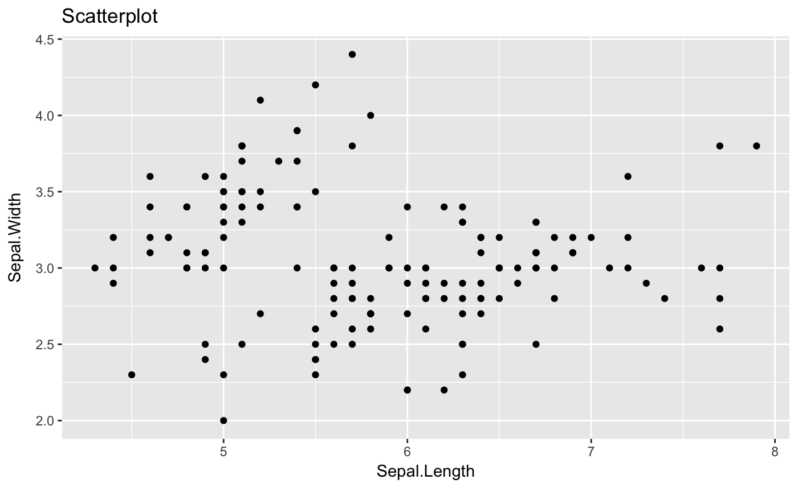

Overview
statr is a personal R package that I have created for organizational/convenience purposes. This project is purely experimental! A (possibly incomplete) list of functions contained in the package can be found below:
-
tidy()tidy’s R package code and updates documentation -
timeit()prints the computation time of a function -
scatter()creates a scatterplot using ggplot -
diagnostic()creates diagnostic plots using ggplot (residual and QQ) -
dsearch()is a dichotomous search algorithm for minimizing a univariate function -
bsearch()is a bi-section search algorithm for minimizing a univariate function
Installation
The easiest way to install is from the development version from Github:
If there are any issues/bugs, please let me know: github. You can also contact me via my website. Contributions are welcome!
Usage
library(statr)
library(magrittr)
#we will use the iris data set
X = dplyr::select(iris, -c(Species, Sepal.Length))
y = dplyr::select(iris, Sepal.Length)
y_class = ifelse(dplyr::select(iris, Species) == "setosa", 1, 0)
#plot Sepal.Length v Sepal.Width
iris %>% scatter(Sepal.Length, Sepal.Width)